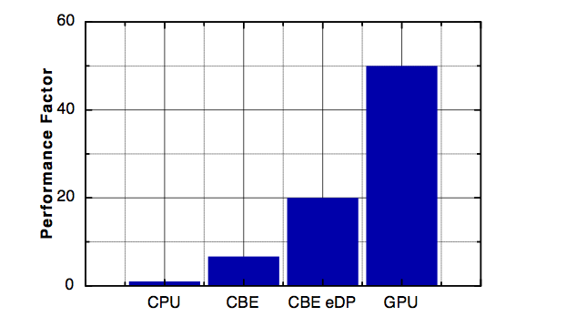
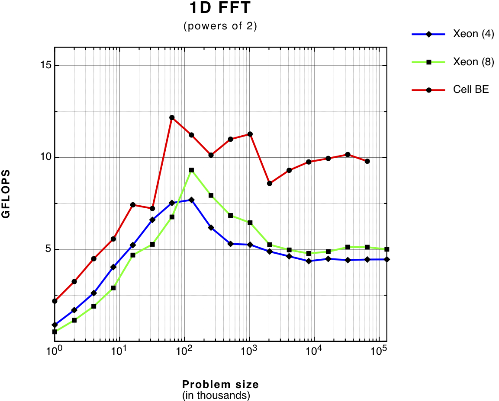
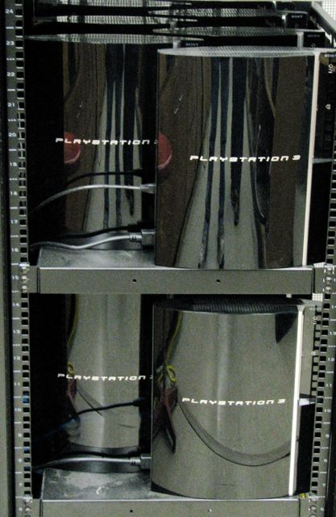
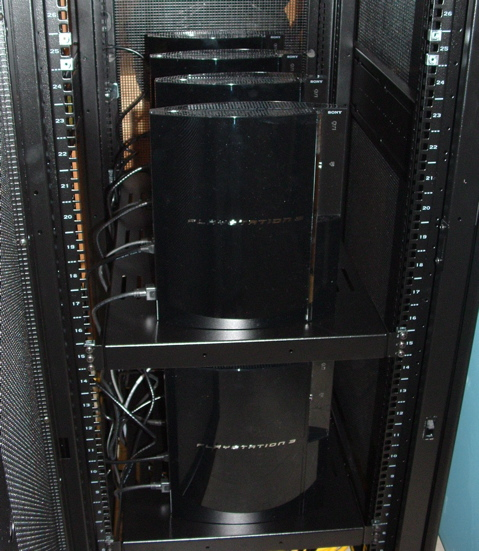

Gravitational waves, tails, and singularities
Black Hole Physics
Projects on binary black hole coalescence, radiative tails, black holes in loop quantum gravity, and Einstein@Home optimization.
Open sectionA restored research site from the early web
Welcome to the Gravity Research Consortium of the Physics Department at UMass Dartmouth and Physics Department at the University of Rhode Island . This website is about different aspects of theoretical and computational gravitational physics, in particular: Our research on Black Holes , Quantum Cosmology and also Scientific Computation . All technical papers related to our research are available on the gr-qc list at the e-print archive . Here is an explicit list of a few selected articles. Research in this group is supported by the National Science Foundation (NSF), MA Space Grant Consortium (NASA), US Air Force Research (AFRL/AFOSR), private foundations (FQXi and others) and the computer industry (Apple, IBM, Sony, Nvidia and others). Interested students and general public should contact Professor Gaurav Khanna (gkhanna-at-umassd-dot-edu) for any queries or suggestions. Check out our PS3 cluster for various research projects, that was made possible owing to a generous, partial donation from Sony. And here is its “big brother” built in a “reefer” container. Also check out the website of our new campus-wide Center for Scientific Computing & Visualization Research . And here is Prof. Khanna’s talk on the GW150914 detection at our campus’ Interstellar event (2016) with Prof. Kip Thorne !

Research areas
Gravitational waves, tails, and singularities
Projects on binary black hole coalescence, radiative tails, black holes in loop quantum gravity, and Einstein@Home optimization.
Open section
Discrete spacetime and the early universe
Loop quantum cosmology, quantum space dynamics, black holes in loop quantum gravity, and cosmological natural selection.
Open section
Alternative computing for numerical relativity
Use of PS3, IBM QS22 Cell blades, CUDA/OpenCL GPUs, and multicore CPUs for gravitational wave science.
Open section
Portable many-core computing
OpenCL for high-resolution, long-duration black-hole binary inspiral computations and data analysis.
Open sectionComputational physics

Consumer hardware as scientific infrastructure
Exploration of gaming GPUs, fused processors, and next-generation consoles for numerical modeling and big-data analysis.
Open section
Sixteen PlayStation 3 consoles doing real science
A low-cost PS3 cluster for black-hole and gravitational-wave computations, widely covered in the media.
Open section
176 PS3s in a refrigerated shipping container
A containerized PS3 supercomputer with striking performance-per-dollar and performance-per-watt.
Open sectionPeople
Videos and coverage